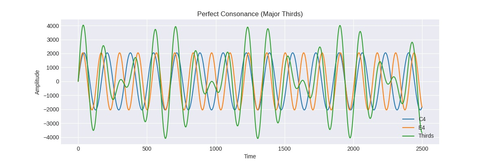

Katie He



Music in Python
With a few lines of code using Numpy and Scipy, one can easily analyze sound even if you don’t have trained musician ears and perfect pitch. Read the 2-part blog post here and here.


What’s lost in JPEG?
In this post I will replicate the lossy part of JPEG compression process in Python using common libraries (mostly just Numpy and Scipy for the actual compression), which includes chroma subsampling, discrete cosine transform, and quantization